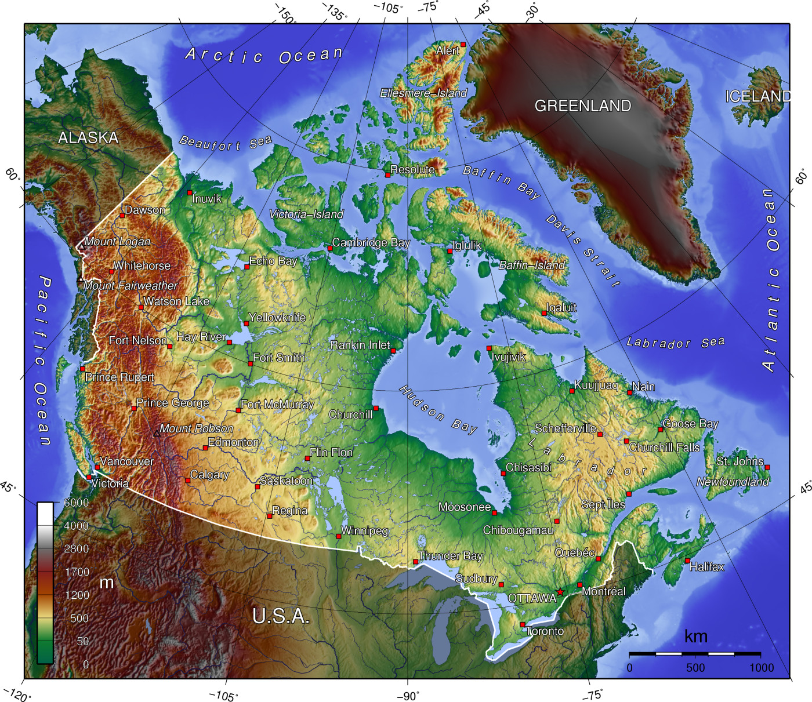

By total area (including its waters), Canada is the second-largest country in the world, after Russia. By land area alone, however, Canada ranks fourth, due to having the world's largest proportion of fresh water lakes. Stretching from the Atlantic Ocean in the east, along the Arctic Ocean to the north, and to the Pacific Ocean in the west, the country encompasses 9,984,670 km2 (3,855,100 sq mi) of territory. Canada also has vast maritime terrain, with the world's longest coastline of 243,042 kilometres (151,019 mi). In addition to sharing the world's largest land border with the United States—spanning 8,891 km (5,525 mi)—Canada shares a maritime boundary with Greenland to the northeast and with the France's overseas collectivity of Saint Pierre and Miquelon to the southeast. Canada is also home to the world's northernmost settlement, Canadian Forces Station Alert, on the northern tip of Ellesmere Island—latitude 82.5°N—which lies 817 kilometres (508 mi) from the North Pole.

The physical geography of Canada is widely varied. Boreal forests prevail throughout the country, ice is prominent in northern Arctic regions and through the Rocky Mountains, and the relatively flat Canadian Prairies in the southwest facilitate productive agriculture. The Great Lakes feed the St. Lawrence River (in the southeast) where the lowlands host much of Canada's economic output. Canada has over 2,000,000 lakes—563 of which are greater than 100 km2 (39 sq mi)—containing much of the world's fresh water. There are also fresh-water glaciers in the Canadian Rockies, the Coast Mountains and the Arctic Cordillera. Canada is geologically active, having many earthquakes and potentially active volcanoes, notably Mount Meager massif, Mount Garibaldi, Mount Cayley massif, and the Mount Edziza volcanic complex.
Canada is divided into fifteen terrestrial and five marine ecozones. These ecozones encompass over 80,000 classified species of Canadian wildlife, with an equal number yet to be formally recognized or discovered. Due to human activities, invasive species and environmental issues in the country, there are currently more than 800 species at risk of being lost. Over half of Canada's landscape is intact and relatively free of human development. The boreal forest of Canada is considered to be the largest intact forest on Earth, with approximately 3,000,000 km2 (1,200,000 sq mi) undisturbed by roads, cities or industry. Since the end of the last glacial period, Canada has consisted of eight distinct forest regions, with 42 percent of its land area covered by forests (approximately 8 percent of the world's forested land). Approximately 12.1 percent of the nation's landmass and freshwater are conservation areas, including 11.4 percent designated as protected areas. Approximately 13.8 percent of its territorial waters are conserved, including 8.9 percent designated as protected areas. Canada's first National Park, Banff National Park established in 1885, spans 6,641 square kilometres (2,564 sq mi) of mountainous terrain, with many glaciers and ice fields, dense coniferous forest, and alpine landscapes. Canada's oldest provincial park, Algonquin Provincial Park, established in 1893, covers an area of 7,653.45 square kilometres (2,955.01 sq mi). It is dominated by old-growth forest with over 2,400 lakes and 1,200 kilometres of streams and rivers. Lake Superior National Marine Conservation Area is the world's largest freshwater protected area, spanning roughly 10,000 square kilometres (3,900 sq mi) of lakebed, its overlaying freshwater, and associated shoreline on 60 square kilometres (23 sq mi) of islands and mainland. Canada's largest national wildlife region is the Scott Islands Marine National Wildlife Area, which spans 11,570.65 square kilometres (4,467.45 sq mi) and protects critical breeding and nesting habitat for over 40 percent of British Columbia's seabirds. Canada's 18 UNESCO Biosphere Reserves cover a total area of 235,000 square kilometres (91,000 sq mi).